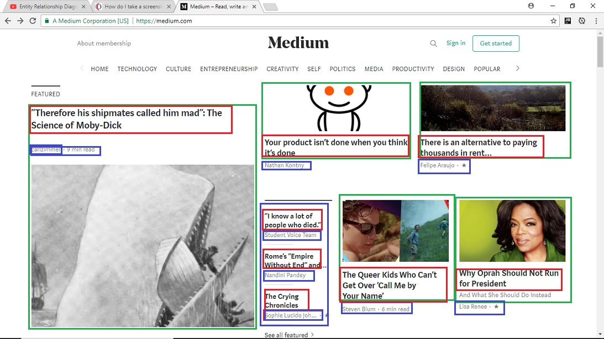

Data Design 'stab' at Medium.com
What this page tries to explain.
In my initial go around with data design and organizing the entities, their attributes and the entity to entity relationships, I took a screen shot of the home page of Medium.com.
I then drew GREEN/BLUE rectangles over Entities and RED rectangles over attributes of those entities.

Entities
In my initial view, I found 2 main entities that grabbed my attention:
- Articles(GREEN)- These are the main 'things' on the page that have to be saved to our database. Each article is an instance of the 'table' named Articles.
- Authors/(BLUE)- These people can be categorized as an entity
Attributes
The attributes I've found describe characteristics on the Entities
- Titles of ARTICLE(RED)- These describe who wrote the article
- Date written of ARTICLE-The date the article was written is also put in our database.
- Name of AUTHOR- This is something we would want to save in a database.